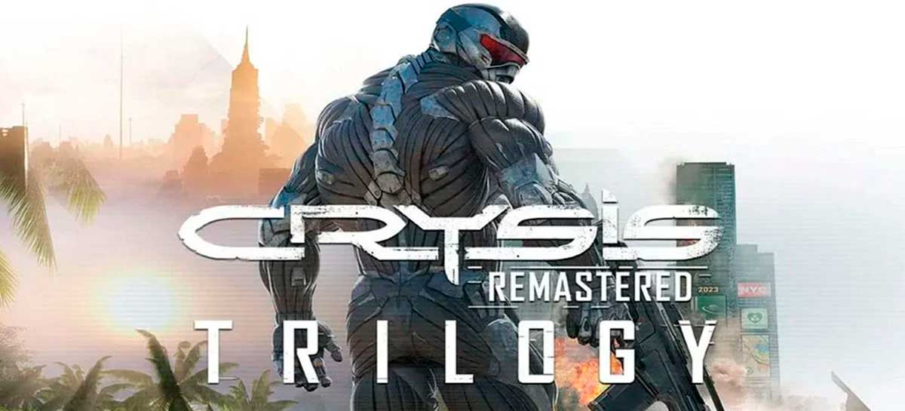
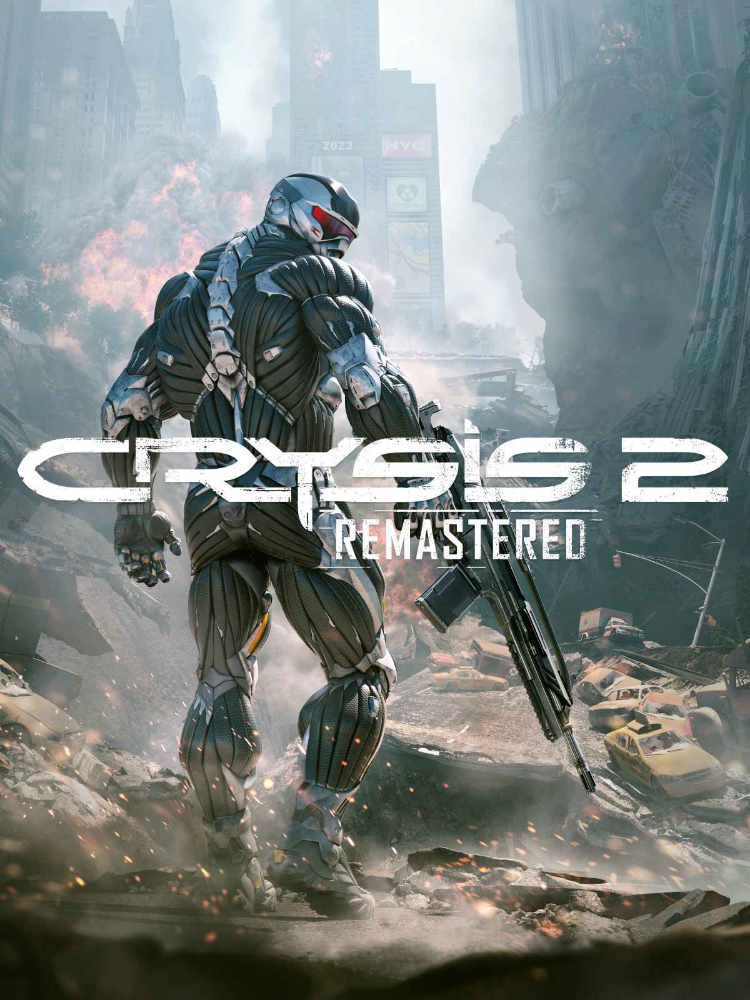

Já disponíveis para Playstation 5 e Xbox Series X | S
Experimente os fênomenos de entretenimento Trilogia Crysis Remastered
Compre já!Experimente os fênomenos de entretenimento Trilogia Crysis Remastered
Compre já!Inclui modo história do Crysis 2 Remastered e Crysis 2 Remastered Online